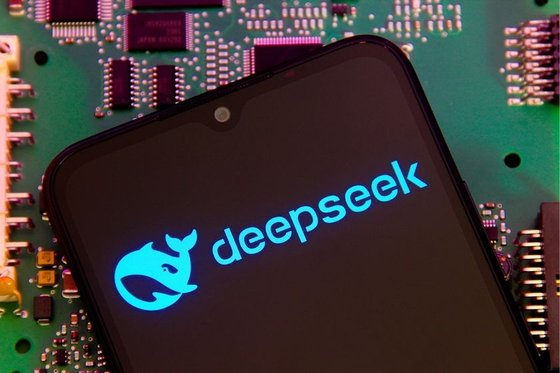
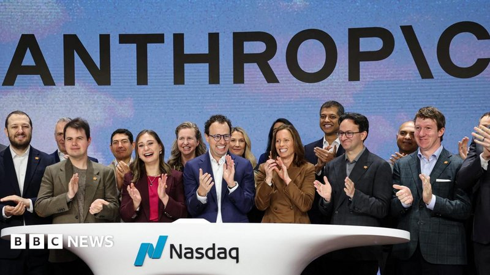
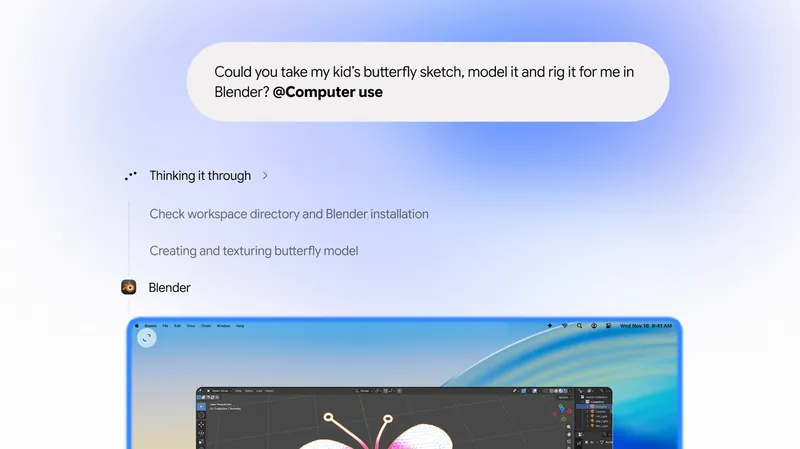

国内重点DeepSeek 完成第二轮外部融资，工商变更落地
财新报道，DeepSeek 第二轮外部融资完成，英文标题称为千亿元融资；工商信息显示杭州深度求索人工智能基础技术研究有限公司于 11 月 17 日完成变更，注册资本由 1644.75 万元增至 1991.87 万元，新增股东杭州程砚企业管理咨询合伙企业持股约 17.27%，该平台同期新增 31 家有限合伙人
财新 · 11-19 17:17
看原文

国内重点财新报道，DeepSeek 第二轮外部融资完成，英文标题称为千亿元融资；工商信息显示杭州深度求索人工智能基础技术研究有限公司于 11 月 17 日完成变更，注册资本由 1644.75 万元增至 1991.87 万元，新增股东杭州程砚企业管理咨询合伙企业持股约 17.27%，该平台同期新增 31 家有限合伙人

国际重点热门Anthropic becomes one of world's most valuable public companies in first-of-its kind IPO
BBC 报道，Anthropic 作为首家纯粹的 AI 公司登陆纳斯达克，发行价为每股 83 美元，开盘升至 111.5 美元，市值一度接近 2 万亿美元，收盘约 97 美元，当日涨幅约 17%，估值约 1.76 万亿美元；同期纳斯达克综合指数收跌近 2.3%

国际实用Let Gemini tackle repetitive chores on your Mac
谷歌宣布，Mac 版 Gemini 应用新增计算机操作（computer use）功能，可在文件夹、应用和网页之间代用户执行重复任务，屏幕和光标控制权仍归用户；该功能正在向美国的 Google AI Plus、Pro 和 Ultra 订阅用户以英语推送
在 2027 财年第二季度财报分析师电话会上，阿里巴巴集团 CEO 吴泳铭表示，千问已在平头哥芯片上训练下一代模型，百炼已基于国产芯片提供模型推理服务，并称阿里的全栈 AI 基础设施将在国产算力供应链上形成优势
快手 CEO 程一笑在业绩会上表示，Kling 4.0 上线后可灵流水提升，收入由企业客户 API 调用与专业创作者订阅共同驱动，用户规模和 ARPPU 均有增长，并已落地影视、游戏和具身智能等场景
美团面向全国餐饮商家推出“妙手到店餐饮版·智能掌柜”AI 服务，可自动生成经营报告、梳理顾客评价，并辅助广告选址和套餐设计；已有烤肉、粤菜等连锁品牌用于门店管理和线下广告投放
Introducing Tool Retrieval in the Gemini API
谷歌在 Gemini API 中以预览形式推出 Tool Retrieval，让智能体按需加载工具参数 schema，而不必每次请求都发送完整工具库，从而在工具数量扩大时减少输入 Token 并保持选择准确
Genie 4 is now available on the Gemini API.
谷歌宣布 Genie 4 已在 Gemini API 上线，开发者可用其生成 720p、带原生音频的可交互世界，并支持实时操控
新华社报道，达尔罕茂明安联合旗至包头市区 195 公里氢气长输管道正式启运，为全国首条超百公里纯氢长输管道，入选国家能源局首批能源领域氢能试点，设计压力 6.3 兆帕、核准年输氢量 10 万吨，标志着规模化、长距离纯氢管道输送取得突破
工业和信息化部等六部门公布第二批领航级智能工厂培育名单，小米汽车超级智能工厂等 34 家入选；官方称这批工厂人工智能场景应用比例超 70%，开发工业智能体超 1000 个
工业和信息化部正式启动 2026 年“5G+工业互联网”融合应用城市试点工作，这是继 2024 年首批试点之后再次面向城市开展该融合应用试点
华为电动技术有限公司宣布，鸿蒙智行问界新 M8 旗舰 SUV 搭载华为智擎增程五合一智能平台，综合发电效率 94.5%，整车综合续航提升 2.8%
We’re partnering with Blue Origin on our first heavy-lift Project Suncatcher launch.
谷歌宣布与蓝色起源合作，进行 Project Suncatcher 的首次重型运载发射。该计划旨在利用太空太阳能，长期在太空扩展 AI 基础设施
How we’re putting one of quantum mechanics’ deepest features to the test at scale.
谷歌 Quantum AI 发表研究，称在其处理器上验证了量子语境性（contextuality）可在规模上支撑量子算法，并展示其相对经典极限的优势
Google will launch Android app verification requirement globally in January 2027
Ars Technica 报道，谷歌将于 2027 年 1 月在全球启动 Android 应用验证要求，并称目前几乎所有开发者都已加入验证
微软官方在 PyPI 上的 Agent Framework 软件包被植入用于窃取登录凭据和云令牌的恶意代码，涉事版本上线 31 分钟后即被下架；开发者需核查是否下载过相关版本并及时处置
阿里巴巴集团发布 2027 财年第二季度业绩，营收同比增长 10%，资本支出超过 504 亿元、增长约六成；报道称其 AI 相关产品收入已连续 13 个季度保持三位数增长
财新报道，虚拟电厂正进入加速发展期，到 2030 年最大调节能力有望翻番，反映出电力用户逐步参与电力市场的趋势
快手发布 2026 年第三季度业绩，实现收入 316 亿元，同比下降 11%；公司预计后续资本开支及 AI 投入对现金流的压力将逐步减轻
中秘共建“一带一路”重点项目钱凯港运营满两年。报道称，“从钱凯到上海”通道将中秘海上货运周期由原先的 35 天至 40 天压缩至 23 天，港口已度过初期运营磨合阶段
US stocks end more than 2% lower in wake of Anthropic debut
金融时报报道，美国股市收跌逾 2%，发生在 Anthropic 上市之后
AMD shares fall after short seller report on China links
金融时报报道，一份做空机构关于 AMD 与中国业务关联的报告发布后，该公司股价下跌
Australian PM to meet Xi Jinping as iron ore tensions loom
金融时报报道，澳大利亚总理将与习近平会面，双方会晤之际铁矿石领域的紧张局势受到关注
Mrima Hill deal: US consortium wins Kenya mining project, beating Chinese rivals
BBC 报道，美国财团获得肯尼亚 Mrima Hill 采矿项目，该矿据估蕴藏价值超过 600 亿美元的关键矿产，并在竞争中胜过中国企业
11 月 19 日下午，国家主席习近平在深圳同俄罗斯总统普京、美国总统特朗普举行中俄美元首会晤，围绕维护世界和平、促进大国关系战略稳定交换意见。习近平指出，这是三国最高领导人首次聚首，具有开创性意义，并强调大国和则世界安、大国斗则世界乱
Myanmar committed genocide against Rohingya minority, top UN court rules
BBC 报道，联合国国际法院作出前所未有的裁决，认定缅甸对罗兴亚少数群体实施了种族灭绝，裁决涉及 2017 年造成数千人死亡的军事镇压
亚太经合组织 19 日发布互联互通蓝图，强调促进本地区商品、服务、资金和人员流动，并从“硬联通”“软联通”“心联通”等方面提出目标，包括升级基础设施、减少制度性壁垒、促进商务人员流动等，以《2040 年亚太经合组织布特拉加亚愿景》为指引推进区域合作
人力资源社会保障部近日印发关于修改《职称评审管理暂行规定》的决定，进一步深化职称制度改革，内容聚焦强化评审监管、加强信用管理和优化评审管理，新规将于明年起施行
同济大学附属上海市第四人民医院王静团队、熊利泽教授团队联合哈佛医学院麻省总医院等，发表经鼻送药入脑干预阿尔茨海默病的新研究，探索把药物更有效地递送至脑内
Europe ready for talks with Russia on ending war in Ukraine, leaders say
乌克兰的欧洲盟国在柏林峰会上表示，已形成“统一”谈判立场，并准备与俄罗斯就结束战争举行会谈
俄罗斯总统普京 19 日表示，在克里米亚大桥遭袭后，俄方不会就海上停火或停止攻击能源设施与有关方面谈判，并称将作出比乌方袭击力度更大的回应。乌克兰总统泽连斯基 17 日证实，乌军使用无人机和“海王星”导弹打击了大桥的公路和铁路设施
Senegal boat disaster: Dozens missing as migrant boat sinks
BBC 报道，一艘据称载有 50 至 100 人的移民船在塞内加尔附近沉没，已发现至少 4 具遗体，另有数十人失踪
第七届长三角地区文化博览会开幕，活动聚焦文化消费新活力，展示数字内容与区域文化合作
中国音像著作权集体管理协会卡拉 OK 版权收费首次突破 5 亿元，创下历史新高，反映该领域版权管理规模继续扩大
中国在广西新发现直立人化石，研究团队认为这将助力破解古人类演化的关键谜题
俄罗斯宫廷珍宝展览在上海世博会博物馆亮相，向观众展示相关历史文物与艺术品
Van Gogh painting sells for $190.4m after row over Nazi history
梵高 1890 年在生命最后两个月创作的《开花的栗树》（Châtaigniers en fleurs）拍出 1.904 亿美元，此前因与纳粹历史相关的争议受到关注
Ella Langley sweeps Country Music Awards as Taylor Swift performs with Keith Urban
Ella Langley 在乡村音乐奖上获得六项大奖；同场，泰勒·斯威夫特（Taylor Swift）与 Keith Urban 合作演出
当地时间 11 月 18 日晚，第 77 届美国国家图书奖在纽约揭晓，公布小说、非虚构、诗歌、翻译文学和青少年文学等奖项，萨尔曼·拉什迪（Salman Rushdie）获得杰出贡献奖
GTA 6 Is Already the Most Popular Game Ever on Both Twitch and Kick, and It's Only Been Out for a Day
IGN 报道，《GTA 6》全球发售后约 26 小时内，已成为 Twitch 和 Kick 两个平台历史上最热门的游戏
Epic 本周免费送出游戏《深渊之印》（Mark of the Deep），并预告下周将送出《火之石 – 放置点击英雄 RPG》和《Bread and Fred》
You can now buy a Steam Machine without getting on a waitlist
The Verge 报道，Valve 的 Steam Machine 现已可以不经过候补名单直接购买，但内存供应紧张仍在制约供货
网易高管在财报相关场合回应 AI 短剧热度，认为短剧短期内能吸引较高用户关注，但游戏的互动优势不可替代
GTA 6 has replaced websites with social media and phone apps because "it didn't feel necessary"
Rockstar 表示，《GTA 6》不再像《GTA 5》那样设置虚拟网站，因为“感觉没有必要”，转而用游戏内的社交媒体和手机应用来承载相关内容
"When you buy a game, you should be able to sell it, trade it or lend it to a friend" GameStop CEO slams 'code-in-a-box' games in the wake of GTA 6's discless release
在《GTA 6》无光盘发行的背景下，GameStop CEO 批评“盒子里只有代码”的销售方式，称买游戏的人应能转卖、交换或借给朋友，并认为这削弱了竞争